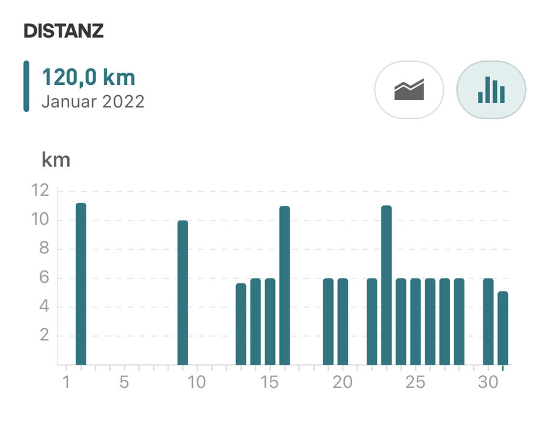

Der Januar ist vorbei.
Nach anfänglichen Schwierigkeiten habe ich mein Trainingspensum langsam erhöht. Aufgrund des wirklich fiesen, kalten Wetters habe ich mich entschieden, anders als sonst üblich mehr drinnen auf dem Laufwand zu laufen. Viel Zeit bleibt mir nicht, um bis April fit zu werden. Da kann ich nicht viele Tage wegen Regens auslassen.
120 Kilometer habe ich dann tatsächlich geschafft. Jetzt kommt der Februar mit seinen 28 Tagen. Da muss ich die Schlagzahl erhöhen.
